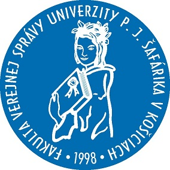
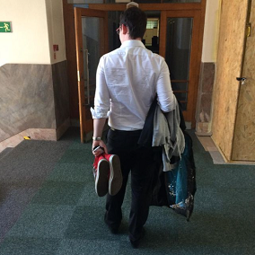
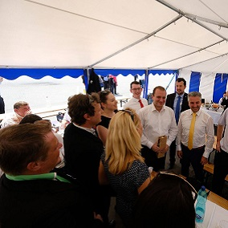
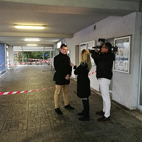
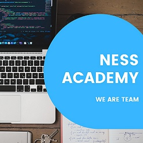
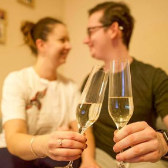
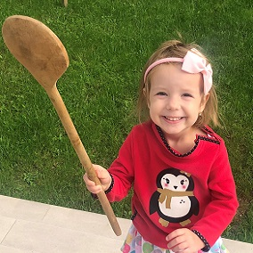
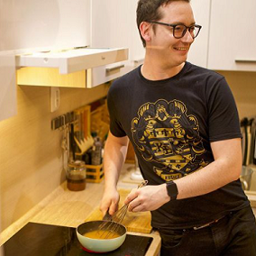

Študoval som na Fakulte verejnej správy v Košiciach, odbor verejná správa, z ktorého som úspešne spromoval s titulom Bc.

Počas štúdia na VŠ sa mi naskytla príležitosť ísť pracovať na Ministerstvo financií Slovenskej republiky, kde som pracoval dva roky ako asistent generálnej riaditeľky sekcie medzinárodných vzťahov. Popri tejto práci som s kamarátom založil firmu, aby som sa ako správny úradník v Bratislave aj uživil.

Dostal som ponuku ísť pracovať do kancelárie novozvoleného predsedu KSK. Po vyše roku som začínal pochybovať o fungovaní samosprávy na Slovensku.

S menšou prestávkou, kedy som robil ako poradca primátora v Humennom, som sa vrátil do Košickej samosprávy ako hovorca Mestskej časti Západ. Po tejto skúsenosti som definitívne stratil záujem o prácu úradníka.

Momentálne sa venujem učeniu a vzdelávaniu v IT oblasti. Paradoxne, nie typ práce, ale spôsoby riadenia sú najväčším rozdielom medzi mojou súčasnou a minulou prácou.

Som štastne zasnúbený a naša svadba bude 21. Augusta (Pôvodne to mal byť apríl ale tak korona - šak viete.. )

Spolu s Lenkou vychovávame (teda snažíme sa, často má navrch) Lenkinu dcéru Hanu. Hana má tri roky ale správaním práve dosiahla najťahšie štátium puberty.

Veľmi rád varím, chodím na túry a diskutujem rôzne spoločenské témy pri dobre vychladenom pivku. Popri týchto náročných aktivitách sa však ešte stíham angažovať v neziskovom sektore.